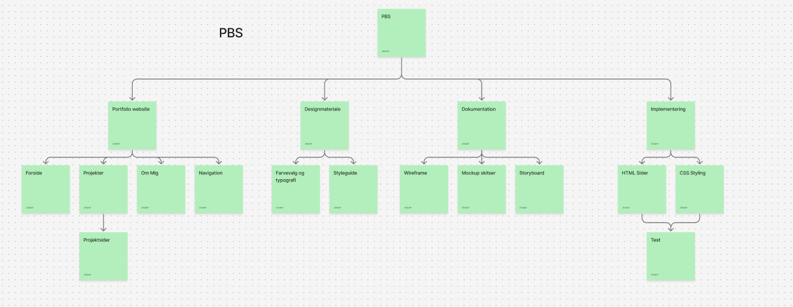
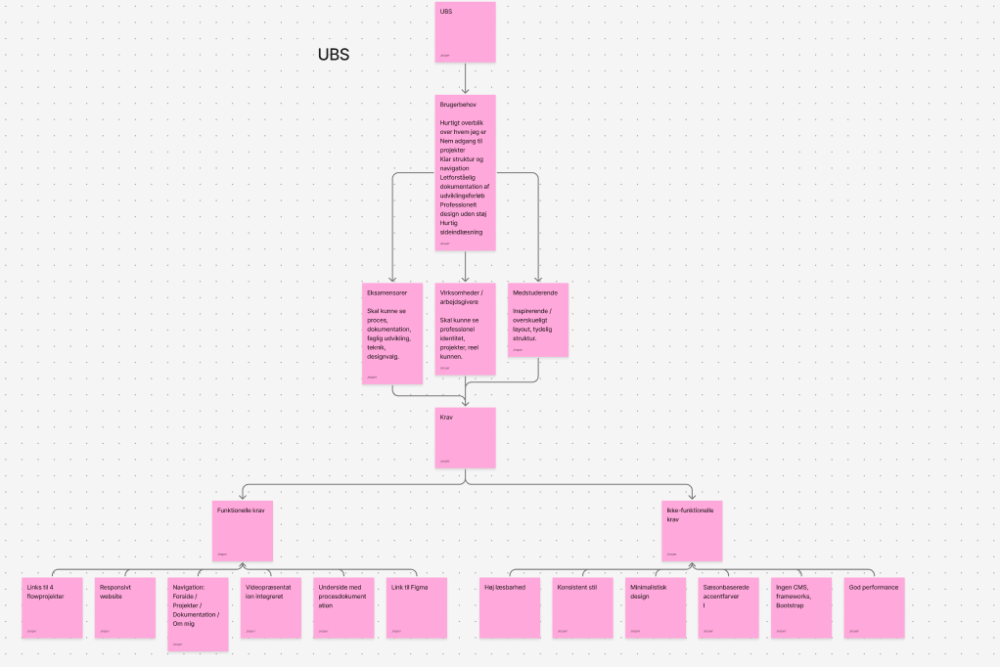
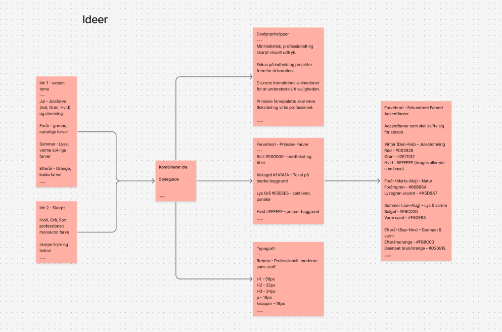

Portfolioudvikling & Dokumentation
Her kan du følge hele processen bag udviklingen af min portfolio
1. Projektplanlægning
Min tilgang til projektet startede med at definere formål, målgruppe og scope. Jeg har arbejdet struktureret gennem hele processen ved hjælp af forskellige planlægningsværktøjer, med fokus på både produkt og brugeroplevelse. Jeg har i dette brugt ChatGPT som hjælpemiddel. Jeg har bedt den overholde de regler der sat op for os i Eksamensopgave beskrivelsen. Den har hjulpet mig med at strukturere mine tanker og skabe overblik over projektets forskellige faser. Den er desuden også brugt hvis jeg kom på fejl jeg ikke selv kunne finde og løse.
Formål og Målsætning
- Primær målgruppe: Potentielle arbejdsgivere, undervisere og medstuderende
- Formål: At præsentere mine kompetencer inden for UI/UX, design og webudvikling
- Scope: Responsivt portfolio-website med fokus på visuel identitet og brugeroplevelse
- Succeskriterier: Professionelt udtryk, funktionel navigation, veldokumenteret proces
Gantt Chart - Tidsplan
Jeg har udarbejdet en detaljeret tidsplan der viser projektets faser fra planlægning til færdiggørelse:
- Nov 25-30: Idéudvikling og planlægning
- Nov 30 - Dec 7: Design fase (wireframes, mockups, styleguide)
- Dec 2-19: Udvikling og kodning
- Dec 10: Test og kvalitetssikring
- Dec 19: Aflevering
PBS & UBS Strukturer
Product Breakdown Structure (PBS)

PBS viser projektets leverancer opdelt i fire hovedområder:
- Portfolio Website: Forside, Projekter, Om Mig, Navigation
- Designmateriale: Farvevalg, typografi, styleguide
- Dokumentation: Wireframes, mockups, storyboard
- Implementering: HTML-sider, CSS styling, test
User Breakdown Structure (UBS)

UBS beskriver brugerens interaktion med portfolioen:
- Brugerbehov: Hurtigt overblik, nem navigation, professionelt udtryk
- Skærmopløsninger: Desktop, tablet og mobil
- Vidensniveau: Både tekniske og ikke-tekniske besøgende
- Funktionelle krav: Responsive design, hurtig loading, tilgængelighed
2. Idéudvikling & Konceptfase
Jeg startede med at brainstorme omkring portfolioens visuelle identitet og udtryk. To hovedidéer blev udviklet:
Idé 1: Sæson-tema
Minimalistisk, professionelt og skarpt visuelt udtryk med fokus på indhold og projekter frem for dekoration.
- Jul - Julefarve (rød, grøn, hvid) og stemning
- Forår - grønne, naturlige farver
- Sommer - lyse, varme sol-lige farver
- Efterår - orange, kolde farver
Idé 2: Skarpt Design
Moderne, professionelt design med fokus på kontrasterende farver og skarpe linjer.
- Hvid, grå, sort professionelt monoton farve
- Skarpe linjer og bokse
Valgt koncept: Jeg valgte at kombinere begge idéer - et skarpt, minimalistisk grunddesign med subtile sæsonfarver som accenter. Dette giver et professionelt udtryk, samtidig med at det skaber personlighed.

3. Styleguide & Designprincipper
Farvevalg
Jeg har valgt en minimalistisk farvepalette der understøtter professionelt udtryk og god læsbarhed:
Primær tekst og titler
Primær knapper og links
Hover states og succes
Sektioner og paneler
Primær baggrund
Begrundelse for farvevalg
- Sort (#000000): Skaber stærk kontrast og professionalisme. Bruges til brødtekst og overskrifter for optimal læsbarhed.
- Rød (#C62828): En mættet, kraftfuld accentfarve der tiltrækker opmærksomhed til call-to-action elementer uden at være aggressiv.
- Grøn (#2E7D32): Komplementerer den røde farve og skaber visuel variation ved hover states. Signalerer handling og bekræftelse.
- Lys Grå (#E5E5E5): Skaber subtile sektioner uden at være forstyrrende. Giver struktur til layoutet.
- Hvid (#FFFFFF): Ren baggrund der fremhæver indhold og skaber "breathing room".
Typografi
Overskrift H1 - Roboto 56px
Font-weight: 700, bruges til hovedoverskrifter
Overskrift H2 - Roboto 32px
Font-weight: 600, bruges til sektionsoverskrifter
Overskrift H3 - Roboto 24px
Font-weight: 600, bruges til undersektioner
Brødtekst - Roboto 16px
Line-height: 1.6, optimal læsbarhed
Begrundelse for typografi: Roboto er valgt som primær font, da det er en moderne, professionel sans-serif der sikrer optimal læsbarhed på alle skærmtyper. Fonten har et neutralt udtryk der passer til et professionelt portfolio, samtidig med at den er lettere end mange andre sans-serif fonts.
Designprincipper
Minimalisme
Rent, fokuseret design uden unødvendige elementer. Hver komponent har en klar funktion og bidrager til helhedsoplevelsen.
Kontrast & Hierarki
Sort/hvid base med røde accenter skaber tydelig visuel hierarki. Brugeren guides naturligt gennem indholdet.
Whitespace
Rigelig luft mellem elementer forbedrer læsbarhed og skaber et professionelt, luftigt udtryk der ikke føles overvældende.
Konsistens
Genbruger designelementer, spacing og farver på tværs af alle sider for en sammenhængende brugeroplevelse.
Tilgængelighed
WCAG-kompatible kontrastforhold, semantisk HTML og keyboard navigation for alle brugere.
4. Informationsarkitektur & Navigation
Jeg har designet en simpel, intuitiv sidestruktur der gør det let for besøgende at finde information:
Sitemap
🏠 Jesper Deetho Jessen Portfolio
-
📄 Forside
- • Introduktion og velkomst
- • Video præsentation
- • Kort om hvem jeg er
- • Mine værktøjer
-
👤 Om Mig
- • Baggrund og erfaring
- • Kompetencer
- • Interesser
-
💼 Projekter
- • Flow 1: Billedbehandling
- • Flow 2: Første website
- • Flow 3: Visuelt koncept
- • Flow 4: Kampagne
-
📋 Dokumentation
- • Projektplanlægning
- • Designproces
- • Udviklingsdokumentation
-
📧 Kontakt
- • Kontaktformular
- • Sociale medier
- • Email og telefon
Navigationsprincipper
- Sticky header: Navigation er altid tilgængelig når brugeren scroller
- Aktiv side indikation: Brugeren kan altid se hvor de er
- Konsistent placering: Navigation er identisk på alle sider
- Hover effekter: Visuel feedback når brugeren interagerer
5. Videoproduktion & Storyboard
Jeg har produceret en introduktionsvideo der præsenterer mig selv og mine kompetencer. Processen fulgte et struktureret storyboard, dog valgte jeg at cutte nogle scener da det ikke passede sammen i slutningen:
Storyboard
Videoen er struktureret i 6 scener, hver med specifikt formål:
Scene 1: Introduktion
Billede: Mig foran kamera
Lyd: Ingen baggrundslyd
Tekst: Mit navn og uddannelse
Scene 2: På computeren
Billede: Arbejder ved skærm
Lyd: Let baggrund musik
Tekst: "Jeg har altid været interesseret i
digitale medier"
Scene 3: Photoshop
Billede: Skærm med Photoshop
Lyd: Voiceover fortsætter
Tekst: Forklaring om interesse for design og
læring
Scene 4: Tastatur
Billede: Close-up af tastatur
Lyd: Musik fortsætter
Tekst: Forklaring om udvikling og kodning
Scene 5: Halvnær
Billede: Halvnær af mig
Lyd: Voiceover
Tekst: Fremtidsplaner og mål
Scene 6: Fade out
Billede: Fade til sort
Lyd: Musik fader ud
Tekst: Mit navn igen
6. Teknisk Implementering
Valg af Teknologier
I overensstemmelse med eksamenskriteriene er portfolioen udviklet i ren HTML5 og CSS3:
- HTML5: Semantisk markup med <header>, <main>, <section>, <article>, <footer> for bedre tilgængelighed og SEO
- CSS3: Moderne styling med CSS Grid, Flexbox, custom properties (CSS variables) og animations
- Ingen frameworks: Ingen brug af Bootstrap, Tailwind eller andre frameworks som specificeret i opgaven
CSS Arkitektur
Jeg har struktureret CSS'en med fokus på vedligeholdelse og skalerbarhed:
- CSS Variables: Farver, spacing og font-størrelser defineret som variabler for nem opdatering
- BEM-inspireret: Klassenavne der beskriver funktion (f.eks. .doc-section, .color-box)
- Separate filer: style.css for generelle styles, dokumentationstyle.css for denne side